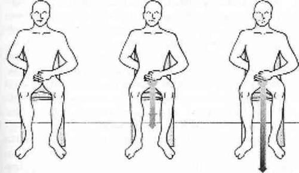

TOPRAKLANMAK
Kafamızın içinde bir oda oluşturmak bedenimizle nazikçe merhabalaşmaktır. Ancak bedeninizin, huzur içinde yaşayabilmek için kibar bir merhabadan daha fazlasına gereksinimi vardır. Topraklama yapmak ve yerküre ile bağlantı kurmak bir sonraki adımdır.
İnsanlar yerküre ile çeşitli şekillerde bağlantı kurabilirler; temas ederek, yemek yiyerek, doğayla ya da suyla yakınlaşarak, hayvanlara dokunarak ve sağlıklı cinsel ilişki kurarak. Ben bu işlemi, bedenin içine girmek; şimdiki zamana ve yerküreye bağlanmak (topraklanmak) olarak tanımlıyorum. Bu aslında çoğumuzun günlük hayatta doğal olarak yaptığı bir işlemdir.
Açlıktan başınızın döndüğü bir anda mükemmel bir yemek yiyip kendinizi tatmin olmuş hissetinizse, kendinizi toprakladınız demektir. Çok yoğun bir çalışmadan sonra, sevdiğiniz, güvendiğiniz birinin sırtınıza yaptığı masajla gevşediyseniz işte topraklandınız. Sizi şimdiki zamana geri getiren; rahatlayıp mutlu olmanızı sağlayan her şey topraklamadır.
Topraklanmamış insanlar odaklanmakta zorluk çekerler, huzursuz ve stresli olurlar, çevrelerindeki her şeyi kontrol etmeye çalışırlar. Doğal olarak topraklanmış kişiler ise, sade ve dengeli insanlardır, bedenlerinde evlerindeymiş gibi huzur içinde yaşarlar. Topraklama, bedeni sakinleştirdiği; içinde yaşanılacak sıcak ve huzurlu bir yer yarattığı için insanı dengeler. Başkalarını kontrol etmeye çalışmak gereksizleşir çünkü topraklama bedene kendisini kontrol etme yolunu verir; beden, enerjiyi ve duyguları serbest bırakmayı, kendisini an be an arındırmayı öğrenir. Deneyin ve görün.
İLK TOPRAKLAMA KORDONUNU YARATMAK
Kendinizi nasıl topraklayacaksınız? Sırtı dik bir sandalyeye kollarınızı ve bacaklarınızı çaprazlamadan oturun. Ayak tabanlarınız düz olarak yere bassın. Yapabiliyorsanız kafanızın içindeki odaya girin. Sağ elinizi karnınıza, kasık kemiğinin biraz üstüne; sol elinizi de tam kuyruk sokumunun bitimine koyun.
Yapabiliyorsanız gözlerinizi açık tutun ve leğen kemiğinizin içindeki bölümde her iki elinizin arasında yuvarlak bir enerji merkezi olduğunu hayal edin. Çakra sistemini biliyorsanız bu merkezin sizin birinci çakranız olduğunu da bileceksiniz (Şekil 2). Bu merkez genellikle 7 ila 12 cm çapında bir disk olarak resmedilir. Disk öne doğru bakar ve görülebilir renkli enerji içinde döner. Rengi kırmızı olmalıdır.

Şekil 2. İlk Topraklama Kordonunu Yaratmak
Bu sımsıkı çapalanmış enerji diski her zaman bedenimizdedir. Bu enerji merkezi siz doğmadan önceden beri oradadır. Sürekli ve tükenmez bir kaynak olan bu enerjinin işlevi sizi beslemek ve size hizmet etmektir.
Kafanızın içinde kalın. Enerjinin bu çakra içinde döndüğünü hayalinizde canlandırın ve bu enerjinin dümdüz aşağı doğru hareket eden bir borusu ya da bir kordonu olduğunu görün. Bu kordon çakranızla aynı çapta ya da bir parça daha ince olabilir. Canlı bir renkte enli bir topraklama kordonu hayal etmek daha kolay olabilir. Çakranızı bedeninize sıkıca çapalanmış olarak imgeleyin ve kordonun genital bölgeden çıkarak sandalyeyi geçip yere girdiğini düşünün.
Kordonunuzu yaratmak için tükenmez bir enerji kaynağınız olduğunu bilmelisiniz. Birinci çakranızı tüketmiyorsunuz, sadece içinizdeki hiç bitmeyecek olan enerjiyi gezegenin merkezine yönlendiriyorsunuz. Nefes almaya devam edin ve eğer başarabiliyorsanız kafanızın içindeki odada kalarak gevşeyin. Topraklama kordonunuzun daha da aşağılara inerek bulunduğunuz binanın temelini; binanın altındaki toprak katmanlarını delip geçtiğini ve gezegenin merkezine ulaştığını görün.
Hala kafanızın içindeki odada mısınız, yoksa kordona yapışıp gezegenin merkezine doğru gittiniz mi? Kordonu takip etmeniz gerekmiyor. Odanızın içinde kalın ve kordonu gözünüzde canlandırarak kumanda edin. Kordonunuz size itaat edecektir.
Kordonunuz gezegenin merkezine ulaştığında onu sıkıca bir yere bağlayın. Kordonu ucunda çapa bulunan bir zincir olarak; kökleri gezegenin merkezine dolanan bir ağaç olarak; kaynağı hiç tükenmeden merkeze akan bir şelale olarak; fişini gezegenin merkezine taktığınız bir elektrik kablosu olarak ya da size göre en uygunu neyse o olarak düşünebilirsiniz.
Bedeninizin ağırlık merkezi (leğen kemiğiniz) ile gezegenin ağırlık merkezi arasındaki güçlü bağı ve diğer uçtaki sağlam bağlantıyı hissedin. İsminizi kordondan aşağıya doğru üç kere söyleyin ya da etrafında dönen enerjide yazılı olarak görün. İşte ilk topraklama kordonunuz!
Odanızın içinde kalmaya ve kendinizi topraklamaya alıştığınızda kordonunuzu yok edin. Atın, bırakın ya da yakın; bir şekilde yok olmasını sağlayın. Ne isterseniz onu yapın ve ondan kurtulun. Tamamen ortadan kaybolmasını sağlayın. Siz yaptınız siz yok edebilirsiniz. Bırakın yok olsun, şimdi.
Neden mi? Çünkü manevi bilgi ve iletişim dünyası uzun zamandır ya fazla büyütülmüş ya da küçük görülmüştür. Enerji ile ilk kez çalışmaya başlayan kişiler dengelerini kaybedebilirler. Bazıları ölmüş akrabalarının ortaya çıkacağını ya da Tanrı’nın onlara bağıracağını filan düşünürler. Saçmalık. Sadece kendi enerjinizle ve kendi bedeninizle çalışacaksınız. Hepsi bu kadar. Size şunu hatırlatayım; bizim kültürümüzde, yani Batı kültüründe ruhu araştıracak ne dil ne de bağlam var. Çakra bir Doğu Hint sözcüğüdür Batı’da böyle bir kavram bile yoktur! Yani sonuç olarak Batı düşüncesi ruh ile ilgili spiritüel bir araştırmaya başlar başlamaz bir yığın zırvalık ve korkuyla dolu Pandora’nın Kutusu açılıverir.
Kendinizi bu tepkisel, cahilce maneviyat korkusundan soyutlayın. Enerjinizin ve enerji yaratımlarınızın tek efendisi sizsiniz; bunu sakın unutmayın. Enerji araçlarınız size aittir; mükemmel değillerse, doğru renkte ya da doğru büyüklükte değillerse o zaman onları yok edip her şeye yeniden başlayabilirsiniz. Yetki sahibi sizsiniz. Kendi yarattığınız her şeyi yok edebilirsiniz ve yeniden başlayabilirsiniz. Patron sizsiniz.
Şimdi kendinizi istediğiniz bir biçimde yeniden topraklayın. Şayet ayakta dururken, ellerinizi birinci çakranızın üzerine koymadan da kendinizi topraklayabiliyorsanız, yapın! Kordonunuz için parlak bir renk seçin; birinci çakranızın kırmızı olmasına karşın kordonun illa kırmızı olması gerekmez. Kordonunuza hayat ve hareket verin; patronun siz olduğunu söyleyin. Yeni kordonunuzdan aşağı doğru isminizi söyleyin.
Topraklama kordonunuzu yaratırken uymanız gereken sadece birkaç kural vardır; Kordonun her iki ucu da sağlamca bağlı olmalıdır; aşağıya doğru sürekli bir akış olmalıdır, böylece kordon bir arınma aracı olarak kullanılabilir; kordonun dış yüzeyi pürüzsüz olmalıdır, üzerinde enerji sızıntısına ya da karışıklığa neden olacak hiçbir delik, yırtık ya da çatlak olmamalıdır. Bunlar dışında kordonun büyüklüğünün, renginin ve bağlantı çapasının nasıl olacağına karar vermek tamamen sizin zevkinize kalmıştır.
Ayağa kalkın ve dolaşın. Zıplayın. Koşun. Yatın. Kordonunuz sizinle birlikte gelip rahatça hareket ediyor mu? Öyle hissetmiyorsanız hemen kordonu bedeninizden atın. Ben iyi yapılmamış bir kordonu hayali bir makasla kesip gezegenin merkezine yollamaktan hoşlanırım. Yeniden daha iyi bir kordon yaratın ya da kordonu atmaya razı olamıyorsanız ona tekerlek takın. Her yeni kordon yaratışınızda kordondan aşağıya doğru kendi isminizi söylemeyi unutmayın.
Topraklama yapamıyorsanız endişelenmeyin. Şimdilik tek ihtiyacınız yeniliklere açık olmak. Bedeniniz arkadan yetişip fiziksel gerçekliği oluşturana kadar aklınız durumu idare edecek bir gerçeklik oluşturma konusunda harikalar yaratır. Rahatlayın ve okumaya devam edin. Çok yakında topraklamayı başaracaksınız. Benim kendimi topraklamam aylarımı almıştı, ama ben inatçıydım. Siz benden daha şanslısınız çünkü bu kitap size topraklama için gereken her türlü yardımı sunuyor. Kafanızın içinde kalın ve çalışmaya devam edin.
TAVIRLARI TOPRAKLAMAK
Hazır olduğunuzda oturun ve yeniden bu ilk topraklama çalışmasını yapın. Kafanızın içine girin ve topraklama kordonunuzu yaratın. Gevşeyin, kordonunuzu sağlam tutun ve yakın zamanda olmuş sizi üzen bir olayı hatırlayın. O anda neler hissettiğinizi iyice hatırlayana kadar olayı düşünün. O duygunun tam olarak içine girin. Aynen o anda hissettiklerinizi yeniden hissedene kadar çalışın.
Şimdi topraklama kordonunuzdan aşağı doğru giden akışı hızlandırın. Sizi üzen deneyiminizi (ki onu hiçlikten kendi bedeninize çağırdınız) bir top haline getirin ve topraklama kordonunuzun içine yerleştirip aşağıya düşüşünü seyredin.
Kafanızdaki odada kalın ve kordonunuzun bedeninizdeki üzüntüyü çekip temizlemesine izin verin. Sıkıntının midenizi terk ettiğini hissedin, karışıklığın aklınızı terk ettiğini hissedin, huzursuzluğun bedeninizi terk ettiğini hissedin. Tüm bu davranışların bedeninizden şakır şakır yıkanıp gittiğini ve sizi mutlu olabilmeniz için bin bir seçenekle baş başa bıraktığını hissedin.
Sıkıntınız bir enerji olarak gezegenin merkezine doğru gittikçe sıkıntı niteliğini yitirdiğini ve yeniden basit temiz enerji haline dönüştüğünü gözlemleyin. Sıkıntının, sizin bu enerjiye eklediğiniz bir şey olduğunun farkına varın. Aynı enerjiyi gülmek, ağlamak, oynamak ya da uyumak için kullanabileceğiniz halde siz sıkılmak için kullanmayı tercih ettiniz.
Sıkıntınızın aşağı doğru düşüp gidişini izleyin. Onu yeniden nötr ve her amaca uygun enerji olarak görene kadar izleyin. Sıkıntınız kordonun sonuna ve gezegenin merkezine vardığında bırakın tertemiz ve parlak kordonunuzun içinden çıkıp gitsin. Bırakın nereye aitse oraya gitsin. Bu enerji topunun ne kadar büyük olduğunu gözlemleyin. Bir başka deyişle iyileşmek ve yaşamak için kullanabileceğiniz ama sıkılmaya harcadığınız enerjinin büyüklüğünü görün. Tek bir basit meselenin çekip gitmesine izin vermiş biri olarak şöyle bir düşünün, enerjinizi nasıl kullanacağınıza dair ne kadar çok seçeneğiniz var. Sıkıntının şu anda tek bir parçasından kurtulmuş biri olarak içinizde nasıl bir farklılık olduğunu hissedin. Belki kendinizi daha rahat ve özgür hissediyorsunuz, belki de öyle hissetmiyorsunuz. Bu, hayatınızda sıkıntıyı kullanmaktan ne kadar hoşlandığınıza bağlıdır.
Şayet sıkıntınızı özlüyorsanız, daha onunla işiniz bitmediyse, bilin ki enerji temizlenmiş bir halde size geri gelecek ve tamamen yepyeni ultra mega bir sıkıntı yaratmanızda size yardım etmeye hazır olacaktır! Unutmayın kontrol tamamen sizde. Enerjinizi nasıl kullanacağınıza siz karar verirsiniz.
Kafanızın içindeki odada oturmuş, temizlenmiş enerjinin topraklama kordonunuzdan gidişini gözlerken, bu enerjinin uçarak sizden uzaklaştığını ve tamamen gözden kaybolduğunu fark edebilirsiniz. Tebrikler! Bir başkasının enerjisini dışarı toprakladınız.
Bir başkasının enerjisini topraklamak da ne demek? Hepimiz, aslında ruhsal gelişime katkısı olmadığı halde bize ait olmayan iletileri, davranışları ve ideolojileri düzenli olarak içimizde besleyip büyütürüz. İşte bunlar içimizde bir başkasının enerjisi olması deyiminin örnekleridir. Bu ıvır zıvırlar “Ağzın doluyken konuşma!” gibi yüzeysel bilgileri ya da “Mükemmel olmazsan kimse seni sevmez!” gibi daha derin bilgileri kapsayabilir. Bu fikirler ve mesajlar, ailemiz aracılığıyla (bazı durumlarda tetiklenen üzüntü veya acılar aracılığıyla) ya da cinsiyetimiz için belirlenmiş kalıplar aracılığıyla (“İyi kızlar asla” veya “Erkek adam asla”) ya da yaşıtlarımız ve çağdaşlarımız aracılığıyla (en iyi arkadaşımızdan medyaya kadar herhangi bir malumat aracısı tarafından) bize verilmiş olabilir.
Enerjiyi topraklama ve arındırma işleminin amaçlarından birisi de hayattaki duruşumuzun ve tavırlarımızın hangisinin özgün hangisinin suni olduğunu bulmaktır. Bir fikir, her ne olursa olsun, rahatsızlık veriyorsa ya da bugünkü yaşantınızı iyileştirmiyorsa o zaman tarafsız bir bakış açısıyla değerlendirilmeli ve topraklanmalıdır. Eğer mesaj, fikir ya da tavır size aitse o zaman toprakladığınız ve arındırdığınız zaman enerjisi size geri dönecektir. Eğer mesaj bir başkasına aitse o zaman sizin etkinizden temizlendikten sonra sahibine dönecektir.
Kendinizi toprakladığınız zaman alışkanlıklarınızla kurduğunuz bağlardan kurtulur ve yeni davranışlar edinmek için enerji açığa çıkarırsınız. Tabii gerçekten istiyorsanız. Böylece mesajlarını ve duruşlarını ödünç aldığınız kişilere de bir hizmet yapmış olursunuz. Bu, başkalarının düşüncelerinden, ihtiyaçlarından ve fikirlerinden kendimizi arındırmak için bizim manevi sorumluluğumuzdur.
Günün her anında, çevremizdeki dünyaya vereceğimiz taze, şimdiki zamana ait ve düşünülmüş cevaplara ihtiyacımız vardır. Topraklama kordonunuz yerindeyse ve çalışıyorsa bedeninizle duygularınız her an arınmak için bir yol bulacaklar demektir. Kendinizi, geçmişin davranışlarından özgürleşmiş, sizi kehribarın içine sıkışmış sinek gibi tutsak eden eski mesajlardan kurtulmuş hissederek, sınırsız bir varlık olarak görmeye başlarsınız.
Topraklandığınız zaman çevrenizde hissettiğiniz sessiz güç size dolu hayatınızın sonucunun değil esasının kendiniz olduğunu hatırlatacaktır.
Dövüş sporlarının öğrencileri topraklama kordonunu çi enerjisinin bir formu olarak kabul ederler. Dövüş sporlarının çoğunda öğrenciler sıçramaktan ve tekme atmaktan önce, ilk olarak en doğru şekilde durmayı ve kendilerini dengelemeyi öğrenirler. Dengede durabilmek için öğrencilere çi enerjisini leğen kemiklerinden aşağı doğru hizalayarak bedenlerini yerçekiminin merkezine ayarlamaları öğretilir. Çi enerjisini harekete geçirmek savaşçı duruşunu oluşturur: Bacaklar yere sıkıca basarken vücut gevşemiş ve farkındalık en uç noktaya erişmiştir. Dövüş sporlarının çoğunda savaşçı duruşu saldırgan ya da meydan okuyucu değil gözlemcidir; gücü ve güçsüzlüğü gözlemler. Dövüş sporları savaşçısı yere sağlam basar, tüm silahları gelebilecek tehlikelere karşı kılıfında hazırdır ama aradığı bir kavga değildir.
Topraklama da, sizin gibi manevi arayışlar içinde olan kişileri tıpkı bu şekilde hazır tutacaktır. Topraklama, sizi yeryüzüne ve şimdiki zamana odaklanmış, bağlanmış halde tutarak, hayatınızda ve manevi duruşunuzda yere sağlam basmanızı sağlar. Artık sizi huzursuz eden düşünceleri ve davranışları topraklama kordonunuzu kullanarak saf dışı bırakabilirsiniz.
MESAJLARI TOPRAKLAMAK
Kafanızın içine girip topraklamanızı kontrol edin. Eğer kordonunuzda bir dayanıksızlık varsa o kordonu yok edip kendinize yepyeni ve parlak bir kordon yapın. İsminizi kordondan aşağı söyleyin ve yeni bir topraklama alıştırması yapmayı deneyin. Bu sefer bir sıkıntıdan daha büyük bir şeyden kurtulmayı deneyelim. Kocaman bir mesajı kordondan aşağı yollayalım ve ondan kurtulalım.
Önce kolay bir mesaj seçin, mesela hemen her ailede geçerli bir anne baba kuralı ya da sizin cinsiyetinizin nasıl davranması gerektiğine dair televizyonda yayınlanıp duran bir kural olabilir. Bu mesaj sözler, duygular ya da görüntüler olabilir. Ancak mesajı yollamadan önce onu adamakıllı hissedin. Mesajı topraklama kordonunuza yerleştirip göndermeden önce bir kontrol edin bakalım, onu geri çağırmak gibi bir niyetiniz var mı? Şayet bir kayıp duygusu ya da bir yoksunluk hissediyorsanız bu mesajla henüz işiniz bitmemiş demektir. Ama siz gene de onu yollayın. Mesaj topraklama kordonunuzdan geçip temizlendikten ve en uçtan çıktıktan sonra nereye doğru gittiğini görmeye çalışın.
Bunların hiçbirini göremezseniz sakın endişelenmeyin. Ben de görsel bir psişik değilim. Sadece koşullanıyorum ve enerjinin işini yapmakta olduğunu bedenimde hissettiklerimin farkına vararak anlıyorum. Enerjiyi bıraktığım zaman kulaklarım basınçla açılıyor ya da nefesim derinleşiyor ve bedenim gevşiyor. Hayal gücünüzü kullanabilirsiniz; beş duyunuz sizi yönlendirir. Bedeniniz yalan söylemez.
Serbest bıraktığınız mesajın enerjisinin nereye gittiğini seyredin ya da hissedin. Eğer mesaj kolayca uzaklaşıyorsa onunla işiniz bitti demektir. Hemen size geri geliyorsa, bu, onun hala gereksindiğiniz ya da inandığınız bir mesaj olduğunu gösterir. Geri gelirse mesajı iyice inceleyin. Şu anda bu mesajın “öteki insan”, “öteki zaman” kimliğini dışarı topraklamış olduğunuz için mesaja şimdiki zamandan, kendi şartlarınızla iyice bakabilirsiniz. Belki de bu kez mesaj size daha derin bir anlamı olduğunu hissettirecektir. Eğer öyle hissederseniz mesajı yeniden kabullenmekten (hem de artık temizlenmişken) ve şimdiki hayatınıza katmaktan çekinmeyin.
Birkaç dakika sonra ya da birkaç gün sonra bu mesajdan huzursuz olursanız o zaman yeniden topraklayın. Kendinize bu mesajı yolculuklarınızdan birinde edindiğinizi; ondan kurtulma gücüne ve hakkına sahip olduğunuzu söyleyin. Patron sizsiniz. Size bir anlam ifade eden mesajları saklayın ama onları öncelikle “geçmiş zaman” ve “başka insan” enerjilerinden arındırın.
İşte bir örnek: Babanız iyi bir aşçıdır. Sadece iyi değil, harika bir aşçıdır. Yemek pişirmeyi seviyorsunuz ama onun bıçakları nasıl bilediğini, tezgahı nasıl sildiğini ve baharatları nasıl tarttığını düşünmeden yapamıyorsunuz. O anda evde bile olmayan babanızın sizin yemek denemeleri yapmanızdan hoşlanmayacağına inanıyorsunuz. Bunları düşününce aslında acıkmamış olduğunuza karar verirsiniz ya da yenilmeyecek bir şey pişirirsiniz.
Eğer kafanızın içindeki odaya gidip babanızın yemek pişirme kurallarını ve tavırlarını topraklarsanız artık onlarla yaşamak zorunda olmadığınızı görürsünüz. Onu sevmek için onun gibi olmaya gereksiniminiz yoktur. Onun düzenli yemek pişirme metodunu uygulayabilirsiniz ama ona güçlü enerjisinin temizlenmiş bir topunu geri gönderin. Babanızın hayatını yaşamaya çalışmadan da onun yemek pişirme zevkini edinebilirsiniz. Ya da onunla girdiğiniz içsel savaşa devam edebilirsiniz. Seçim sizin.
Mesajların sadece enerjiye eklediğimiz ses ve fikirler olduğunu bilin. Onlar Tanrı’nın koyduğu kurallar değildir. Aklımızda ve yüreğimizde bu mesajlara hayat veren sadece bizim onlara odaklanmış dikkatimizdir. Mesajları hiçliğe gönderebilecek tek şey de bizim bilinçli kararımızdır. Her gün birlikte yaşadığınız mesajları topraklayın. Eğer mesajlar çok saçma ise geri dönmelerine izin vermeyin. Başkaları ne yaparsa yapsın, ne derse desin dünyaya nasıl tepki vereceğinizi seçmenin sadece sizin kararınız olduğunu unutmayın.
Birey olmak; başkalarının gereksinimlerinden, isteklerinden ve kurallarından bağımsız olarak varlığınızın anlamını çözmenizin ömür boyu sürecek çabasıdır. Birey olmanın ilk etabı kim olduğunuzu değil kim olmadığınızı öğrenmektir.
Size ait olmayan mesajlardan ve tavırlardan arındığınızda özgün manevi benliğinizin canlanacağı sessiz bir yer yaratmanın ilk adımını da atmış olursunuz. Sizi huzursuz eden düşünceler, duygular ve tavırlardan kurtulduğunuzda topraklama, kimliğinizin ortaya çıkmasını mümkün kılacaktır. İç ve dış dünyanızı kontrol edebileceğinizi bilmekle gerçek dünyaya çok daha fazla uyum sağlayacaksınız. Çevrenizdeki dünyayı kontrol etmek için enerji harcamayacaksınız çünkü enerjiniz her dakika açık ve özgün olmanıza odaklanmış olacaktır.
Topraklama sizi dünyaya çapalayacak ve size sürekli bir destek sağlayacaktır. Ne zaman isterseniz eski mesajları, eski fikirleri ve eski yaşam tarzlarını geri püskürtebilmenizi sağlayacaktır. Topraklama, odaklanmayı şu anda, burada, sadece sizin için ve sadece sizin üzerinize yönelttiği için kimliğinizi bulmanıza yardımcı olacaktır. Topraklama ruhunuzun bedeninizde rahat ve güvende olmasını sağlayacaktır. Bu gerçekleştiğinde daima “şimdide” olacaksınız.
ACIYI TOPRAKLAMAK
Topraklamanın hemen her durum için çok yararlı olduğunu kısa zamanda anlayacaksınız. Bir daha ağrınız ya da acınız olduğu zaman bu alıştırmayı deneyin. Kafanızın içine girin ve topraklama kordonunuzun yerinde olduğundan emin olun. Kordonunuzdan emin olduğunuzda sizi rahatsız eden acınızın tam merkezinde bir ikinci kordon oluşturun. Acının enerji merkezinden gezegenin merkezine doğru bir akım sağlayın.
Bu kordonu bedeninize çapalamak yerine onun içinizdeki acının enerjisini çekip almasına izin verin ve sonunda da kordonla birlikte hepsini atın. Acı bedeninizi terk ederken ona ne kadar bağlı olduğunuzu, onun için ne kadar enerji harcadığınızı ve onsuz yaşamı nasıl hissettiğinizi gözlemleyin.
Duygusal ya da fiziksel olan o acının sadece bir sinyal olduğunu unutmayın. O kendinden korkulması, kaçılması ya da teslim alınması gereken bir varlık değildir. Acı bir şeylerin yanlış gittiğinin sinyalidir. Eğer acı duymazsanız o zaman çevrenizdeki tehlikelerin ya da bedeninizdeki hastalıkların farkına varamazsınız. Acı olmazsa sizin için gerçek tehlike arz eden durumlara körlemesine düşersiniz. Acı sizi tehlike ve hastalıklara karşı dolambaçlı yollardan değil aniden uyarır. Acı oyun oynamaz, siz de oynamayın.
Acıyı sever gibi görünmek ya da onunla pazarlık etmek ve acının ne kadar harika olduğunu düşünerek mucizevi bir şekilde kaybolacağını hayal etmek doğru değildir. Bedeninizi saygıyla dinlemeli, acı çekmeye karşı duyduğunuz duygusal bağı incelemeli ve iyileşme dikkatinizi (ya da doktorunuzun dikkatini) acının olduğu bölgeye yoğunlaştırmalısınız.
Topraklama acı ile iletişime geçmenin en iyi yoludur çünkü bu yöntem bedeninize evde ve farkında olduğunuzu; mesajları alarak değerlendirdiğinizi söyler. Enerji çalışmalarına devam ettikçe bedeninizin şimdiki zamana ve kendinize odaklanmanız için ne kadar çok ağrı ve acı mesajı yolladığını görerek şaşıracaksınız. Topraklama yaptığınızda, tıpkı bir mucize gibi(!) yok oluvermesinden bu tür bir acıyı rahatlıkla tanıyabilirsiniz.
Ana topraklama kordonunuzu her zaman bağlı ve çalışır durumda tutun. Başlangıçta günde en az iki kez kafanızın içine girip kordonunuzu kontrol etmelisiniz. Sessiz bir oda bulmanız gerekmez sadece bir dakika oturun ya da ayakta durun, kafanızın içindeki odaya girin ve kendinizi topraklayın. Bu sadece birkaç saniye sürecektir. Eğer topraklama kordonunuz gevşek ya da gerçekdışı görünüyorsa o zaman onu atıp bir yenisini yapın. İstiyorsanız kordonunuzu her gün değiştirin. Kordon değiştirmek hem masrafsızdır hem de kordonu o günkü ruh halinize ya da kıyafetinize uydurmaya çalışmak eğlenceli olabilir.
Araba kullanırken, yemek yerken, uyurken ve spor yaparken kordonunuz hep çalışsın. Topraklama kordonunuzu işyerinde, sinemada ya da bir kavganın orta yerinde daima kontrol edin. Hastayken, banka hesabınızı kontrol ederken, yemek pişirirken, dans ederken ve sevişirken topraklamanız hep çalışır durumda olsun. Eğer yardıma gereksiniminiz olursa duştayken suyu başınızdan sırtınıza ve sonra ayaklarınıza doğru akıtarak beyninizden yere doğru bir hareket sağlayabilirsiniz. Bunun da yararı olmuyor ve kendinizi hala topraklayamıyorsanız o zaman birinci çakranın anlatıldığı bölüme geçin. Birinci çakranın çalışmasının ve çalışmamasının sonuçlarını anlamak topraklama işlemini daha kolay kılar.
“İleri Teknikler” bölümünde topraklamaya ait başka yöntemler, kurallar ve fikirler bulacaksınız. Sayfaları atlayarak o bölümü okunmaktan çekinmeyin lütfen ama çok fazla bilgi ile kafanızı karıştırmamaya da dikkat edin. Başlangıçta topraklama yaparken zorluk yaşamanız normal, hatta kaçınılmazdır. Eğer işler zorlaşırsa hemen kafanızın içindeki odaya gidip topraklama yapın. Ne kadar çok topraklama yaparsanız işlem o kadar kolaylaşacaktır, çünkü her seferinde bedeniniz daha çok temizlenmektedir. Kısa zaman sonra sürekli dikkat vermeksizin de topraklanmış olarak kalabileceksiniz.
Topraklama yapmak ve kafanızın içinde kalmak için kendinizi çok fazla zorladığınızı hissediyorsanız demek ki hiçbir şey anlamamışsınız! Enerji çalışması zorlama değil sadece uygulama gerektirir. Enerji çalışması ipek kozasından, sihirden, istekten ve niyetten yaratılır. Kan ve tere gerek yoktur. Çok çabalamanız gerekiyorsa, durun. Rahatlayın. Neşelenin. Topraklama alıştırmalarını baştan başlayarak bir daha okuyun ve enerjinizle iyi vakit geçirin.
TEMEL TOPRAKLAMA KURALI
Başlamadan önce bir küçük not: Topraklama çalışmaları sizin üzerinizde harikalar yaratıyorsa, eminim hayatınızdaki insanlar üzerinde de harikalar yaratacağını düşünüyorsunuzdur; doğru da düşünüyorsunuz. Ancak bu sadece onlar da kendilerini topraklamayı seçerse gerçekleşir. Başka insanları topraklamak doğru değildir.
Unutmayın, topraklama iyileştirmektir ve izni olmadan birini iyileştirmek kötü bir manevi etiket anlamına gelir. Dahası sizin kişisel topraklama kordonunuz bir başkasında işe yaramaz. Aksi halde kendi iyileştirme enerjinizi ve kendi cevaplarınızı bir başkasının hayatına yerleştirmiş olursunuz. Çok ayıp. Size ait dersleri öğrenmeye sizden başka hiç kimsenin ihtiyacı yoktur. Kendi topraklama tecrübelerinizi kendiniz yaşamalısınız.
Eğer birisi size topraklama için yalvarıyorsa o zaman kitabınızı birkaç gün için ona ödünç verin. Bildiklerinizi başkalarına da öğretin ama asla kimseyi topraklamayın! Başka insanların manevi gelişiminden sorumlu olduğunuz yanılgısına kapılmayın. Bu bir işe yaramaz. Lütfen kendinize göz kulak olun.